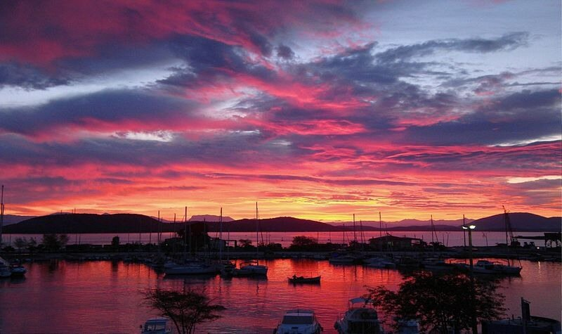

28сентября 1538 года. Восход солнца. Якорная стоянка близ островка Сессола западнее о. Св. Мавры. Ветер – легкий ост-норд-ост.

На современном фото Harry Gouvas показан восход солнца у Превезы.
Большая часть описаний сражения приводит в качестве его даты 28 сентября 1538 года. Но четкого подтверждения этой датировки нет. Многие исследователи склонны считать, что произошло оно 27 сентября. А W. Miller (Latins in the Levant, London, 1908, p.509) вообще помещает сражение при Превезе в 1539 год. Я беру за основу датировку из документов современников этого сражения, которая возможно и требует корректировки, однако приведена последовательно и не вызывает серьезных вопросов.
Появление турецкого флота, наверняка вызвавшее бы у постороннего наблюдателя восхищение открывающейся картиной, у капитан-генерала объединенного флота Священной лиги Андреа Дориа вызвало тревогу. Приближался решающий момент, требовавший срочного принятия решения о плане дальнейших действий. Но Дориа прибегает к испытанному приему многих руководителей, стремящихся затянуть время и снять с себя ответственность – он созывает всех командиров флота на совет. И как будто не висит уже османский орел над союзниками, расправив свои крылья и нацелив клюв в самое сердце христианской эскадры, начинаются длинные речи. Дориа, словно открывая великую истину, говорит о флоте противника, который якобы выманили из его логова и «Вот он, за нашей спиной. Он не может уже убежать, ему некуда спрятаться, он идет нас атаковать, как мы того и хотели.» Что, вы думаете, должно последовать за такими словами. Призыв выполнить свой долг и боевой приказ на предстоящее сражение? Ничего подобного. Дориа говорит, что нужно все хорошенько взвесить, чтобы решить, принимать ли бой. Он пускается в длинные рассуждения о степени риска, которому подвергнутся государства, пославшие весь свой флот в эти воды, если они вдруг потеряют свои корабли. «Кто тогда будет защищать морские берега наших стран?» - вопрошает командующий. (Мы в дальнейшем увидим, что подобными же аргументами хотели остановить дон Хуана испанские министры накануне сражения при Лепанто тридцать лет спустя.)
Командующему возражает венецианский адмирал Винченцо Капелло, требуя не пугать союзников зловещими предсказаниями: «Дож и члены Сената Венеции требуют от нас только бесстрашной битвы с врагом». Он говорит, что готов со своими кораблями встать в авангард флота, или другое самое опасное направление, которое определит командующий, для защиты своей веры и своей страны. А имея такое преимущество над противником, надеяться надо только на победу.
Командующий папским флотом патриарх Марко Гримани, не желая вступать в открытую дискуссию с Дориа, пускается в пространные рассуждения о том, стоит ли начинать сражение на тех позициях, которые занимает христианская армада в данное время, или начать маневрирование навстречу противнику. Однако в конце он высказал поддержку позиции венецианца и сказал, что если только думать о сохранении флота, то вообще не стоило посылать корабли из своих стран в эти воды.
Остальные приглашенные на совет командиры также выступили за сражение и победу. Словно услышав эти призывы, ветер резко поменял направление на ост-зюйд-ост, благоприятствуя галерам и кораблям Лиги, давая им возможность обрушить на противника всю мощь своего оружия. Дориа завершил совет фразой: «Пусть так и будет; да благословит бог наше мужество.»
Совет занял почти три часа.
28 сентября 1538 года. 9 часов утра. Свежий ост-зюйд-ост.
Решение принять бой моментально привело в движение весь флот христиан. Снялись с якорей, подняли паруса и объявили боевую тревогу. Началось формирование боевого ордера.
Парусные корабли были поставлены на фланги флота: половина кораблей под командованием Алессандро Кондулмиеро была выдвинута на правый фланг, вторая половина, под флагом Франческо Дориа, заняла позиции на левом фланге.
Все галеры флота были разбиты на три эскадры, находящиеся на расстоянии в два кабельтова одна от другой. В авангарде находилась эскадра под командованием Андреа Дориа, затем следовали корабли под флагом Венеции и, наконец, в арьергарде, ближе всего к острову Св. Мавры, находилась эскадра галер папы.
Галеры каждой эскадры были выстроены в линию, дистанция между соседними галерами равнялась половине длины корпуса галеры. Весь строй своим строгим порядком напоминал выстроенных на плацу ландскнехтов.
Когда Барбаросса смог визуально оценить построение флота противника, он изменил свой походный ордер, приспособив его к условиям предстоящего боя. Фигура орла была перестроена в полумесяц, галеры османов на веслах стали выгребать к берегу, стремясь занять выгодное положение.
Нерешительность и промедление наказуемо в любом предприятии. Не является исключением и сражение при Превезе. Три часа, потерянные на разговоры и обсуждения, сказались негативно на предбоевом построении христианских эскадр: завершить его не удалось. Причиной стал штиль, неожиданно парализовавший все парусные корабли флота.
28 сентября 1538 года. Полдень. Штиль.
Небольшая дистанция, разделявшая противников, могла быть преодолена за десять минут хода на веслах. Но галеоны, основная ударная сила армады Священной лиги, оказались парализованными полным безветрием. Галеры ушли вперед, оставив мощные артиллерийские корабли дрейфовать в тылу.
К чему это привело, посмотрим в следующий раз.